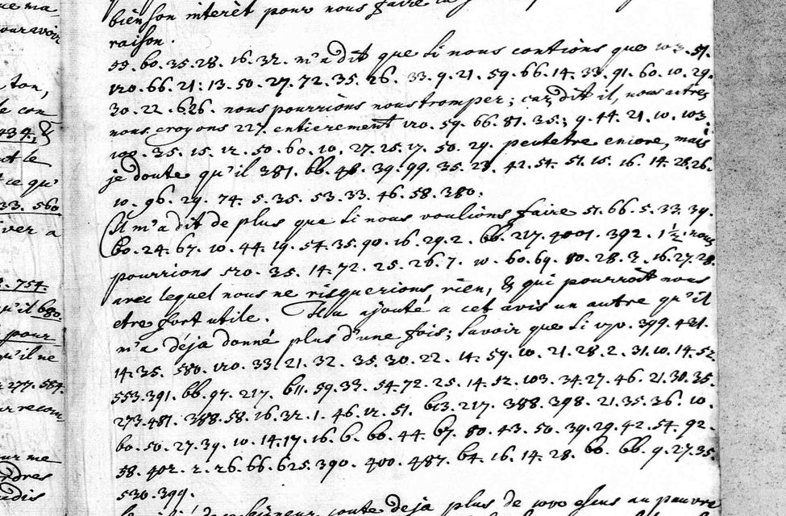

Private mock-up for review, 9 October 2026. Not published, not linked.
Berlin · November 1712
What would London do for the North? A Saxon envoy's cipher postscript
In a cipher postscript from Berlin, Saxony's envoy names the Queen of England three times: once “touchant le prince”, once followed by “ne fera rien pour lui, mais luy …”.

Manteuffel to Flemming, Berlin, November 1712: clear French and numbered cipher in the same lines. SHStA Dresden, Loc. 694/08 f.410.
Each line: the signs as written; then, when revealed, the French as read (the audited layer, every sign graded) and an English rendering (ours).
H read from a key sourceC from known plaintext or a period key tableS cryptanalytic, with a controlM uncertainI inferredU sign not covered by the keyclear written in clear on the page
Ernst Christoph von ManteuffelSaxon envoy at Berlin
writes the cipher postscripts
Jakob Heinrich von FlemmingAugustus II's chief minister
reads them in Dresden
Augustus IIElector of Saxony, King of Poland
Manteuffel's master
Frederick IKing in Prussia
his court is Manteuffel's post
Queen AnneQueen of Great Britain
named three times on f.410
Robert Harley, earl of OxfordLord Treasurer
“too far off” to meddle
Henry St John, BolingbrokeSecretary of State
a “far more violent” line
HeuschHanoverian resident at Berlin
Manteuffel's informant, 13 Oct
Stanislas Leszczyńskithe rival King of Poland
his envoy at Berlin that autumn
Charles XIIKing of Sweden
in Ottoman exile at Bender
Portraits pending: public-domain paintings from Wikimedia Commons were to go here; the Commons API refused this build (rate limit), so every face is a labelled placeholder, never a non-free image.
The moment
Poltava: Charles XII's army is destroyed; Augustus II takes back the Polish crown.
Manteuffel reports what Heusch told him: Oxford called the Queen too far off to meddle in the North; Bolingbroke's line was far harsher (frame 0391).
Manteuffel's cipher postscript on f.410 names the Queen of England three times.
Frederick I of Prussia dies.
The Peace of Utrecht is signed; the war in the North goes on.
Positions by latitude and longitude; no coastlines drawn.
The secret
Interpretation, not part of the audited reading
Our reading of the gist: what Britain would or would not do for a prince in the northern settlement, and Stettin. The unread groups between the phrases decide the meaning, so this stays an interpretation.
“touchant le prince” and “… ra rien pour lui, mais luy”
Try it
Three signs from the key. Guess, then tap.
217
tap to read it
la reine d'Angleterre
grade C · Krauske 1893 table
390
tap to read it
Stettin
grade C · Krauske 1893 table
72
tap to read it
ch
grade C · Krauske 1893 table
How we know
N4No prior decipherment located after the principal editions, catalogues and project pages were searched; internal or unpublished work not excluded.
D2 · about 66.7%Partially deciphered: at least one clause reads, and a verifier wrote one true, specific sentence about it.
Two audits3 Oct 2026 (first audit); 3 Oct 2026 (second, adversarial), each by a session other than the reader.
Grades of the 216 cipher signs read: C 144 · M 49 · U 23
CMU
Whose key. Published key: Dr. O. Krauske's 1893 manuscript key table (SHStA Dresden, Loc. 694/10), applied as written. The story of 13 October is frame 0391, a separate item (N3, D2, audited 8 Oct 2026).
The audit's sentence. Applying Dr. Krauske's 1893 manuscript key table to the unglossed cipher passage of Loc. 694/08 f.410 gives French in stretches; no prior plaintext or decipherment of this passage was located.
Page and line crops: Sächsisches Hauptstaatsarchiv Dresden, 10026 Geheimes Kabinett, Loc. 694/08, digitised image 0511 (archiv.sachsen.de). Reuse terms not recorded in the repository; to be checked with the SHStA before any publication. Private mock-up only. Portrait placeholders and map drawn for this mock-up. English renderings and gists are ours.